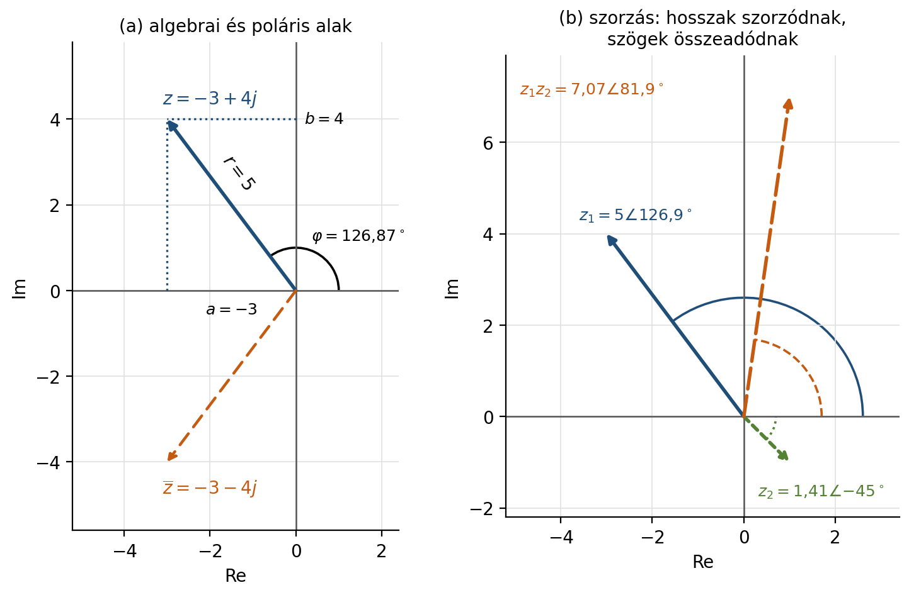
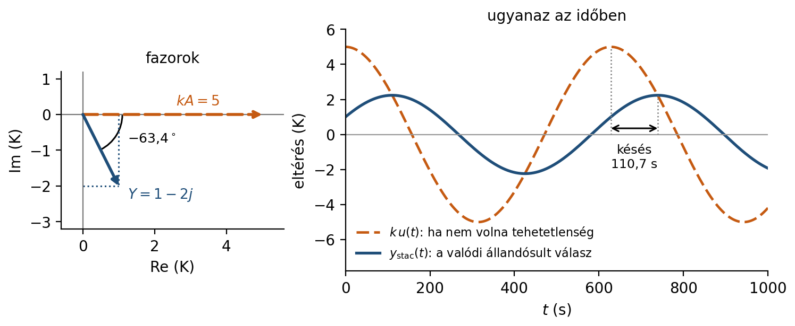

Kapcsoljunk a DC-motorra arányos pozíciószabályozót: a motorra adott
feszültség a szöghiba tízszerese. A zárt kör ugrásválasza kicsit túllő a
célon (kb. 7,7%-kal), majd beáll. Ha a rendszert „megkérdezzük”, milyen
viselkedésre képes, három számot kapunk válaszul:
Ezek a zárt kör pólusai. Egyelőre nem kell tudnod,
hogyan számoltuk ki őket (ezt a következő alfejezetek adják). Most azt a
kérdést tesszük fel: mit mond el a motorról egy olyan szám, amelyben
szerepel? Valódi feszültség és valódi szög nem lehet „képzetes”. A
válasz meglepően szemléletes: a
azt mondja meg, milyen gyorsan halnak el a kilengések,
az
pedig azt, milyen sűrűn követik egymást. A
csak a könyvelés eszköze, amellyel a kettőt egyetlen számban
tartjuk.
Ebben az alfejezetben pontosan annyi komplex számtant veszünk elő,
amennyi ehhez kell: algebrai és poláris alakot, az Euler-formulát, a
komplex exponenciális jelet és a fazort.
3.1.2 Szemlélet: egy pont a síkon,
egy jel az időben
A könyv egyik legfontosabb képe a következő. Válassz egy
pontot a komplex síkon, és rajzold fel az
időfüggvényt. A pont vízszintes helyzete
()
a burkológörbét szabja meg, a függőleges helyzete
()
a lengés ütemét.
Mielőtt tovább olvasol, tippeld meg: az alábbi hat
pont közül melyikhez tartozik lecsengő, melyikhez növekvő, melyikhez
örökké tartó lengés? És melyik lengés cseng le a leggyorsabban?
Statikus változat (mint a PDF-ben)
A hat kijelölt s pont helye a komplex síkon (balra) és a
hozzájuk tartozó Re e^{st} jelek (jobbra)
A képről leolvasható a teljes „szótár”:
bal félsík
(,
zöld tartomány): a jel lecseng; minél messzebb van balra a pont, annál
gyorsabban (A, C gyors; B lassú);
képzetes tengely
():
a lengés nem csillapodik (D);
jobb félsík
():
a jel korlátlanul nő (E, F);
valós tengely
():
nincs lengés, tiszta exponenciális (A, F);
a valós tengelytől távolabbi pont sűrűbb lengést
ad.
3.1.3 Komplex számok: algebrai és
poláris alak
Definíció. A komplex szám
alakú, ahol
és
valós számok,
pedig a képzetes egység (imaginary unit), amelyre
.
Az
a valós rész, a
a képzetes rész. A villamosmérnöki hagyomány szerint
-t
írunk, mert az
az áramot jelöli.
A
számot a sík
pontjának, illetve az origóból odamutató nyílnak képzeljük. Ugyanazt a
nyilat a hosszával és az irányával is megadhatjuk:
Definíció. Az abszolút érték
(magnitude)
,
a szög (argument, angle)
,
vagyis a pozitív valós tengelytől az óramutató járásával ellentétesen
mért irányszög. A poláris alak:
Szavakban:
a nyíl hossza,
az iránya,
és
a két vetülete. A szög egy teljes fordulat többszöröséig határozatlan
(
rad).
Miért atan2, és miért nem egyszerűen
?
A
hányados nem különbözteti meg a
és a
pontot: mindkettőnél
.
Az
mindig a
és
közötti szöget adja, tehát a bal félsíkbeli pontokra
-kal
téved. Az
a két előjelet külön látja.
Definíció. A
konjugáltja
:
a valós tengelyre vett tükörképe. Poláris alakban ugyanaz a hossz,
ellentett szög.

A komplex szám algebrai és poláris alakja a konjugálttal
(a), valamint a szorzás geometriája (b)
Az összeadás algebrai alakban egyszerű (a valós és a
képzetes részeket külön adjuk össze), a nyilak „farok a hegyhez”
illesztésével. A szorzás algebrai alakban a zárójelek
felbontása a
szabállyal:
Poláris alakban viszont sokkal beszédesebb. Írjuk be a két számot, és
használjuk a szögösszegzési képleteket:
Tétel. Szorzáskor a hosszak szorzódnak, a szögek
összeadódnak; osztáskor
()
a hosszak osztódnak, a szögek kivonódnak:
Két hasznos következmény: a
-vel
való szorzás
(,
)
negyedfordulatot jelent; és
mindig valós. Ez utóbbival osztunk algebrai alakban: a törtet a nevező
konjugáltjával bővítjük, így a nevező valós lesz.
3.1.4 Az Euler-formula és a forgó
vektor
Mit jelentsen
?
Ragaszkodjunk az exponenciális legfontosabb tulajdonságához: az
függvény deriváltja
,
értéke
-ban
1. Keressünk tehát olyan
függvényt, amelyre
és
.
Az
pontosan ilyen:
,
és
Ugyanezt adja az exponenciális Taylor-sora is, ha
-t
helyettesítünk be, és a
hatványai szerint
()
szétválogatjuk a valós és képzetes tagokat.
Tétel (Euler-formula). Valós
-re
(radiánban)
Az
tehát az egységkör
szögű pontja,
.
A poláris alak ezzel rövid:
,
és a szorzási szabály a hatványozás megszokott szabálya:
.
A formulát és a konjugáltját összeadva, illetve kivonva a
trigonometrikus függvények is kifejezhetők:
Legyen most a szög az idő lineáris függvénye:
.
Az
egy egységhosszú forgó vektor, amely
körfrekvenciával (rad/s) forog; egy kör ideje a
periódusidő
,
a másodpercenkénti körök száma a frekvencia
(Hz). A függőleges vetülete szinuszgörbét, a vízszintes koszinuszgörbét
rajzol az időben. Negatív
fordított forgásirányt jelent.
Statikus változat (mint a PDF-ben)
Az e^{jωt} forgó vektor négy időpillanatban (T = 4 s),
alatta a vetületei által addig kirajzolt koszinusz és
szinusz
3.1.5 Az
jel: a pólushely jelentése
Engedjük meg, hogy a kitevőben tetszőleges
álljon. A hatványozás szabályával:
Ez egy forgó vektor, amelynek a hossza közben
szerint változik:
esetén befelé,
esetén kifelé tartó spirál. Az
a jel burkolója (envelope). A
és az
mértékegysége 1/s (a körfrekvenciánál rad/s-nak írjuk).
Három gyakorlati mérőszám olvasható le közvetlenül az
pontról:
mennyiség
képlet
jelentés
időállandó
()
ennyi idő alatt a burkoló az
-ára
csökken
2%-os lecsengés
()
a burkoló 0,02 alá ér
periódusidő
()
két azonos fázisú csúcs távolsága
Valós jel csak valós szám lehet, ezért a komplex pólusok
konjugált párban járnak (ahogy a valós együtthatós
polinomok komplex gyökei is). Egy pár két tagja, konjugált
együtthatókkal, valós jelet ad: ha
(
a kapott valós jel amplitúdója,
a kezdőfázisa), akkor
A két komplex vektor képzetes része kiejti egymást: ugyanazzal a
sebességgel, ellentétes irányban forognak. A motor
pólusai tehát egy
alakú mozgást jelentenek:
s,
s.
Az
egy további tulajdonsága a következő alfejezet kulcsa: a
deriválás
-sel
való szorzássá válik,
3.1.6 Fazor: a szinuszos jel
egyetlen komplex számban
Egy
körfrekvenciájú szinuszos jelet két szám jellemez: az amplitúdó
és a fázis
.
Az Euler-formulával
Definíció. Az
komplex szám az
jel fazora (phasor):
az amplitúdó,
a fázis. A forgás
()
minden azonos frekvenciájú jelben közös, ezért elhagyjuk.
Azonos frekvenciájú jeleknél az összeadás a fazorok összeadása, a
deriválás pedig a fazor
-val
való szorzása (a hossz
-szorosára
nő, a fázis
-kal
siet). Így egy differenciálegyenlet közönséges komplex egyenletté válik.
A szinuszosan gerjesztett elsőrendű folyamatnál,
és
mellett, az állandósult szinuszos válasz fazorára
Ez a válasz azon része, amely a kezdeti átmenet lecsengése után
megmarad; hogy az átmenet miért cseng le, a következő alfejezet mutatja
meg.
Továbbvitt eredmény. A szinuszos jel
alakú, a fazor
;
a deriválás
-val
való szorzás. A frekvenciaválasz fogalma
alfejezet erre építi a
mennyiséget.
3.1.7 Kézi számpélda
1. Alakváltás és műveletek. Legyen
és
.
.
A pont a második síknegyedben van;
,
tehát
.
,
.
Szorzat algebrai alakban:
.
Ellenőrzés poláris alakban:
,
és
,
ami valóban az
szöge.
Hányados a nevező konjugáltjával:
,
hossza
,
szöge
.
2. Egy pólus „elolvasása”. Legyen
.
Ekkor
s,
s, a burkoló 2% alá
s múlva ér. A
s időpontban a burkoló
,
a jel valós része
(a 6 radián!). A
időpontban
,
ezért
.
3. Fazor a hőkamrán. A hőkamra holtidő nélküli
modellje
s,
K/%. A fűtőteljesítményt egy munkapont körül
%-kal változtatjuk (a periódus
s). A kimenet eltérésének fazora:
Tehát
K és
.
A hőmérséklet nem 5 K-t, hanem csak 2,24 K-t lendül, és késik:
rad, időben
s.

A hőkamra szinuszos gerjesztése: balra a fazorok, jobbra
ugyanaz az időben
3.1.8 Kód
A Python beépített komplex számai a j jelölést
használják. Az abs a hosszt, az np.angle a
szöget adja radiánban (belül atan2-t számol).
import numpy as npz1, z2 =-3+4j, 1-1jfor name, z in [("z1", z1), ("z2", z2), ("z1*z2", z1 * z2), ("z1/z2", z1 / z2)]:print(f"{name:6s}= {z:11.2f} r = {abs(z):.4f} phi = {np.degrees(np.angle(z)):7.2f} fok")
z1 = -3.00+4.00j r = 5.0000 phi = 126.87 fok
z2 = 1.00-1.00j r = 1.4142 phi = -45.00 fok
z1*z2 = 1.00+7.00j r = 7.0711 phi = 81.87 fok
z1/z2 = -3.50+0.50j r = 3.5355 phi = 171.87 fok
A komplex exponenciálist az np.exp közvetlenül
számolja:
Re e^(st): [ 1. -0.4559 0.2142]
burkoló : [1. 0.4559 0.2231]
tau = 2.00 s, T = 3.142 s, 2% alatt: 7.82 s
A fazorszámítást ellenőrizzük időtartománybeli szimulációval (RK4,
lépésköz 0,1 s; a bemenet egy lépésen belül állandó). Hat
időállandónyinál jóval hosszabb ideig futtatunk, és az utolsó periódust
hasonlítjuk a fazorból felírt szinuszhoz.
from controlkit import models, simbox = models.ThermalChamber()om, A =0.01, 10.0# rad/s, % (eltérés a munkapontból)Y = box.k * A / (1+1j* om * box.tau)print(f"Y = {Y:.3f} K, |Y| = {abs(Y):.3f} K, szög = {np.degrees(np.angle(Y)):.2f} fok")t = np.linspace(0, 4000, 40001)X = sim.simulate(box.rhs, [0.0], t, u=lambda tt: A * np.cos(om * tt))last = t >=4000-2* np.pi / omy_ph = (Y * np.exp(1j* om * t[last])).realprint(f"legnagyobb eltérés az utolsó periódusban: {np.max(np.abs(X[last, 0] - y_ph)):.4f} K")
Y = 1.000-2.000j K, |Y| = 2.236 K, szög = -63.43 fok
legnagyobb eltérés az utolsó periódusban: 0.0011 K
A maradék 0,001 K a lépésenként állandónak vett bemenet hatása (fél
lépésnyi késés).
3.1.9 Próbáld ki
Lecsengés sebessége (az s-sík ábra, első interaktív
lap): tartsd
-at,
és húzd a pontot balról a képzetes tengely felé
(:
).
A csúcsok helye alig változik, de a burkoló egyre laposabb; az
állapotsorban
0,67 s-ról 5 s-ra nő.
Frekvencia: rögzítsd
-t,
és duplázd meg
-t
3-ról 6-ra. A periódusidő a felére csökken (2,09 s → 1,05 s), a burkoló
nem mozdul. Állíts negatív
-t
is: a valós rész ugyanaz – a konjugált pont ugyanazt a koszinuszt
adja.
Átlépés a jobb félsíkra: a „növekvő” gombbal
()
a burkoló 10 s alatt a tizenkétszeresére nő. Figyeld meg, hogy a tengely
skálája átáll.
Forgó vektor (animáció): indítsd el
-val,
majd kapcsold be a „konjugált pár” jelölőt. A két vektor tükörképként
forog, az összegük (lila pont) a valós tengelyen marad, és éppen
-t
rajzol. Próbáld ki a „csillapodó spirál” gombbal is.
3.1.10 Tipikus hibák
Tünet: a számolt szög
-kal
téves egy bal félsíkbeli számnál. Ok:
a síknegyed vizsgálata nélkül. Javítás:atan2(b, a), illetve np.angle(z); kézi
számolásnál rajzold fel a pontot.
Tünet: a np.exp(1j * 90) nem
-t
ad. Ok: a függvények radiánban várják a szöget.
Javítás:np.deg2rad(90); a képletekben
mindig radián, fok csak a kiírásban és az ábrákon.
Tünet:
-vel
számolt amplitúdó túl nagy. Ok: az összeg hossza csak
egyirányú nyilaknál a hosszak összege. Javítás: előbb
algebrai alakban add össze, azután vedd az abszolút értéket.
Tünet: „az
exponenciális, tehát nő”. Ok: a képzetes kitevő
forgatást jelent. Javítás: a növekedést kizárólag a
kitevő valós része
()
határozza meg,
.
Tünet: a számolt periódusidő
.
Ok: a körfrekvencia és a frekvencia összekeverése.
Javítás:
,
.
Tünet: a konjugált pólust „fölösleges”-ként
elhagyva a válasz komplex értékű lesz. Ok: valós jelhez
a pár mindkét tagja kell. Javítás: a párból
alakot képezz.
3.1.11 Önellenőrzés
Mi történik egy komplex számmal, ha
-vel
szorzod?
Hol vannak a komplex síkon azok az
pontok, amelyekhez 0,5 s időállandójú lecsengés tartozik?
Melyik jel cseng le gyorsabban: az
vagy az
ponthoz tartozó?
Miért 1 az
abszolút értéke minden
-re?
Egy szinuszos jelet deriválunk. Hogyan változik a fazora?
3.1.12 Feladatok
(A) Írd poláris alakba:
.
Mennyi
szöge?
(A) Számítsd ki
értékét a poláris alak segítségével.
(B) Jellemezd az
jelet (nő vagy lecseng,
vagy kétszereződési idő,
)
az
,
és
pontokra. Hány teljes lengés fér el
esetén a 2%-os lecsengésig?
(B) Fazorokkal írd egyetlen koszinuszos jellé:
.
(B) Az Euler-formulából, a szorzási szabállyal
vezesd le
és
képletét.
(C) Helyettesítsd be az
próbafüggvényt az
egyenletbe. Mely
értékekre teljesül minden
-re?
Milyen valós megoldást lehet a két gyökből összerakni?
(C, programozás) Írj describe(s)
függvényt, amely egy komplex
-re
visszaadja a viselkedést (lecseng, tartós, nő), a periódusidőt, és
lecsengő lengésnél a 2%-os szint eléréséig eltelő periódusok számát.
Próbáld ki az
,
a
és a
pontokon.
3.1.13 Rövid összefoglaló
A komplex szám
,
ahol
és
.
Szorzáskor a hosszak szorzódnak, a szögek összeadódnak; a
-vel
szorzás negyedfordulat. Az Euler-formula szerint
,
így
egységhosszú forgó vektor,
periódussal. Továbbvitt eredmények: az
jel
esetén lecseng
(),
esetén nő,
esetén leng; konjugált pár valós,
jelet ad. Deriváláskor
szorzó jelenik meg. A szinuszos jelet az
fazor írja le, a deriválás
-val
való szorzás.
3.1.14 Megoldások
3.1.14.1 Válaszok az önellenőrző
kérdésekre
A hossza nem változik, a szöge
-kal
csökken (negyedfordulat az óramutató járásával egyező irányban).
A
függőleges egyenesen (tetszőleges
-val).
Az
-höz
tartozó: a lecsengés sebességét csak a valós rész szabja meg
(
s, szemben a
s-mal). A
csak a lengés sűrűségét adja.
.
Megszorzódik
-val:
a hossza
-szoros
lesz, a szöge
-kal
nő.
3.1.14.2 A feladatok
megoldásai
,
,
tehát
.
A
szöge
.
,
ezért
.
:
monoton lecsengés,
s.
:
lecsengő lengés,
s,
s; a 2%-os szintet
s alatt éri el, ez
teljes lengés.
:
növekvő lengés, kétszereződési idő
s,
s.
fazora 3;
fazora
.
Az összeg
,
tehát
.
Ellenőrzés
-ban:
.
.
A valós és képzetes részeket egyeztetve:
,
.
,
,
így
.
Mivel
,
,
azaz
.
A pár valós kombinációja
,
ahol
-et
és
-t
a kezdeti feltételek rögzítik.
Egy lehetséges megoldás:
def describe(s, tol=1e-12): sig, om = s.real, abs(s.imag) kind ="lecseng"if sig <-tol else"nő"if sig > tol else"tartós" T =2* np.pi / om if om > tol elseNone periods = np.log(50) /-sig / T if (sig <-tol and T) elseNonereturn kind, T, periodsfor s in (-0.88+1.08j, -0.1+10j, 3j): kind, T, periods = describe(s) extra =f", periódus a 2%-ig: {periods:.2f}"if periods else""print(f"s = {s}: {kind}, T = {T:.3f} s{extra}")
s = (-0.88+1.08j): lecseng, T = 5.818 s, periódus a 2%-ig: 0.76
s = (-0.1+10j): lecseng, T = 0.628 s, periódus a 2%-ig: 62.26
s = 3j: tartós, T = 2.094 s
Az első eredmény a motivációs motorra vonatkozik: a kilengés egyetlen
periódus alatt gyakorlatilag eltűnik, ezért látunk az ugrásválaszban
csak egy kis túllövést.